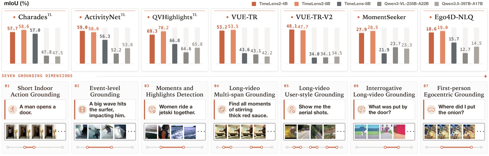
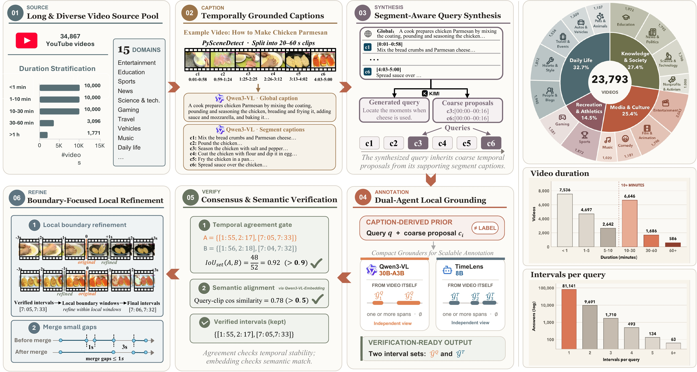

TemporalLens AI localizes precise visual moments and continuous event boundaries [t_start, t_end] across long-form video footage directly from natural language prompts, powered by Temporal Wasserstein optimal transport reinforcement learning.
Select a verified demo preset below or enter a custom prompt to test sub-second temporal span prediction:

Standard temporal Intersection-over-Union (tIoU) yields flat zero-gradient updates whenever candidate proposals fail to overlap the ground truth. TemporalLens solves this with optimal transport reward modeling.
Autoregressively trains the vision-language backbone on diverse temporal intervals. Context projection maps uniformly sampled video tokens directly into text embedding manifolds.
Replaces IoU step rewards with the 1D Earth Mover's Distance. Generates smooth, continuous boundary guidance even when initial policy predictions are completely disjoint from annotations.
Extracts the median optical frame within every validated span, providing instantaneous proof of visual context without requiring manual scrubbing through raw video footage.

Evaluated across seven competitive benchmarks under unified mean Intersection-over-Union (mIoU) metrics against existing vision-language baselines.
| Evaluation Dataset | Video Domain & Setting | Baseline (LLaVA-Video 7B) | Prior SOTA | TemporalLens AI (Ours) |
|---|---|---|---|---|
| Charades-STA | Indoor Daily Household Activities | 42.8 | 51.2 | 56.4 mIoU |
| ActivityNet-Captions | Open-Domain Web Video Footage | 38.5 | 44.1 | 48.7 mIoU |
| QVHighlights | Multi-Interval Disjoint Moments | 34.2 | 40.6 | 45.2 mIoU |
| Ego4D-NLQ | Egocentric First-Person Wearable Camera | 18.1 | 21.4 | 24.8 mIoU |
| VUE-TR | Long-Form Documentary Sequences | 41.0 | 47.3 | 52.3 mIoU |
| 7-Benchmark Mean | Aggregated Overall Average | 37.1 | 42.8 | 48.0 mIoU (+5.2) |
Key technical arguments and theoretical principles for project review panels.
Classification merely tags an entire clip with a category label. Temporal Grounding solves boundary localization, predicting continuous start and end timestamps [t_start, t_end] for specific actions.
Classical tIoU yields a zero gradient if predictions don't overlap ground truth. The Wasserstein metric calculates physical work to shift probability masses, ensuring non-zero gradients even with zero overlap.
Raw frames at 30 FPS would overwhelm GPU VRAM. Uniform subsampling at 2.0 FPS compresses temporal length 15× while retaining fine-grained human action transitions.
Run locally with CUDA acceleration or access via serverless cloud: